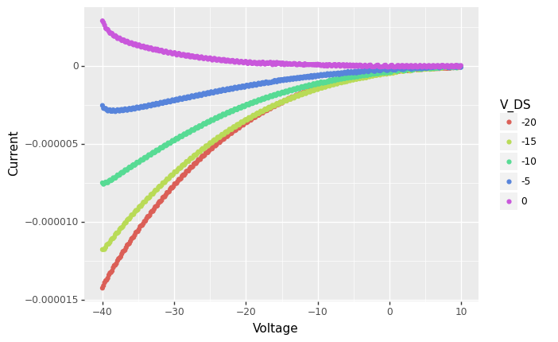
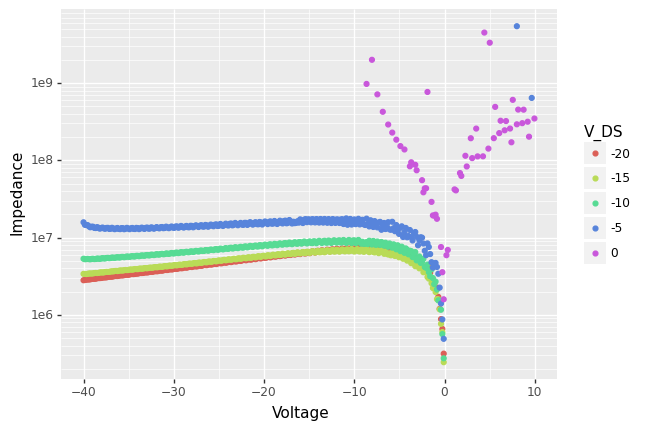

Wrangling 01 singlefile blocks
Reading a data file with multiple data blocks
import numpy as np
import pandas as pd
from matplotlib import pyplot
import matplotlib.pyplot as plt
d = pd.read_csv("SIO_2.TXT", delim_whitespace=True, skiprows=4)
d
| V | A | |
|---|---|---|
| 1 | -40.00 | -1.424200e-05 |
| 2 | -39.85 | -1.409100e-05 |
| 3 | -39.70 | -1.389200e-05 |
| 4 | -39.55 | -1.377300e-05 |
| 5 | -39.40 | -1.372700e-05 |
| ... | ... | ... |
| 1666 | 9.35 | 4.619400e-08 |
| 1667 | 9.50 | -6.069200e-08 |
| 1668 | 9.65 | -7.775500e-08 |
| 1669 | 9.80 | -5.004100e-08 |
| 1670 | 9.95 | 2.859200e-08 |
1670 rows × 2 columns
with open("SIO_2.TXT") as f:
head = [next(f) for x in range(4)]
print(head)
['FET Vds-Id\n', 'VG= -40 to 9.95 in 0.15 step\n', 'VDS= -20 to 0 in 5 step\n', 'NO. VG ID\n']
V_G = np.arange(-40,9.95+0.15,step=0.15) # note arange does not include the endpoint, so we go one step further
V_G.shape
V_DS = np.arange(-20,0+5,step=5) # note arange does not include the endpoint, so we go one step further
V_DS.shape
(5,)
Let's check that the information is consistent with the data
d.shape[0] / V_G.shape[0] == V_DS.shape[0]
True
# d["V_DS"] = np.tile(V_DS, V_G.shape[0])
d["V_DS"] = np.repeat(V_DS, V_G.shape[0])
d
| V | A | V_DS | ratio | |
|---|---|---|---|---|
| 1 | -40.00 | -1.424200e-05 | -20 | 2.808594e+06 |
| 2 | -39.85 | -1.409100e-05 | -20 | 2.828046e+06 |
| 3 | -39.70 | -1.389200e-05 | -20 | 2.857760e+06 |
| 4 | -39.55 | -1.377300e-05 | -20 | 2.871560e+06 |
| 5 | -39.40 | -1.372700e-05 | -20 | 2.870256e+06 |
| ... | ... | ... | ... | ... |
| 1666 | 9.35 | 4.619400e-08 | 0 | 2.024072e+08 |
| 1667 | 9.50 | -6.069200e-08 | 0 | -1.565280e+08 |
| 1668 | 9.65 | -7.775500e-08 | 0 | -1.241078e+08 |
| 1669 | 9.80 | -5.004100e-08 | 0 | -1.958394e+08 |
| 1670 | 9.95 | 2.859200e-08 | 0 | 3.479994e+08 |
1670 rows × 4 columns
We may sometimes want to convert from long to wide format, so that all the measurements are in separate columns:
d.pivot(index='V', columns='V_DS', values='A')
| V_DS | -20 | -15 | -10 | -5 | 0 |
|---|---|---|---|---|---|
| V | |||||
| -40.00 | -1.424200e-05 | -1.177200e-05 | -7.496500e-06 | -2.533700e-06 | 2.892200e-06 |
| -39.85 | -1.409100e-05 | -1.176200e-05 | -7.583800e-06 | -2.718800e-06 | 2.782900e-06 |
| -39.70 | -1.389200e-05 | -1.176300e-05 | -7.524300e-06 | -2.730000e-06 | 2.615600e-06 |
| -39.55 | -1.377300e-05 | -1.163400e-05 | -7.443200e-06 | -2.722000e-06 | 2.414700e-06 |
| -39.40 | -1.372700e-05 | -1.147100e-05 | -7.477000e-06 | -2.816800e-06 | 2.359900e-06 |
| ... | ... | ... | ... | ... | ... |
| 9.35 | -9.515400e-08 | -2.034900e-08 | -1.250400e-07 | -9.001600e-08 | 4.619400e-08 |
| 9.50 | -6.714200e-08 | -1.200300e-07 | -6.741000e-08 | -1.037900e-08 | -6.069200e-08 |
| 9.65 | -7.140100e-08 | -7.929000e-08 | -5.859100e-08 | 1.502000e-08 | -7.775500e-08 |
| 9.80 | -6.897400e-08 | -5.587900e-08 | -2.203300e-08 | -2.938900e-08 | -5.004100e-08 |
| 9.95 | -6.461200e-08 | -5.862800e-08 | -4.856000e-09 | -9.029000e-08 | 2.859200e-08 |
334 rows × 5 columns
We can now, for example, plot the I/V data by groups:
#conda install -c conda-forge plotnine
from plotnine import *
# note the use of parentheses, because the syntax below (+) is non-standard in Python
(ggplot(d) +
geom_point(aes(x = 'V',
y = 'A',
color = 'factor(V_DS)')) +
labs(colour = 'V_DS', x = "Voltage", y = "Current"))

<ggplot: (8769427903199)>
Another type of thing we might do with this 'long' format is to transform or summarise the data by V_DS value, with the split-apply-combine strategy:
def IV_ratio(x):
return x['V'] / x['A']
d["ratio"] = d.groupby("V_DS").apply(IV_ratio).values
d
| V | A | V_DS | ratio | |
|---|---|---|---|---|
| 1 | -40.00 | -1.424200e-05 | -20 | 2.808594e+06 |
| 2 | -39.85 | -1.409100e-05 | -20 | 2.828046e+06 |
| 3 | -39.70 | -1.389200e-05 | -20 | 2.857760e+06 |
| 4 | -39.55 | -1.377300e-05 | -20 | 2.871560e+06 |
| 5 | -39.40 | -1.372700e-05 | -20 | 2.870256e+06 |
| ... | ... | ... | ... | ... |
| 1666 | 9.35 | 4.619400e-08 | 0 | 2.024072e+08 |
| 1667 | 9.50 | -6.069200e-08 | 0 | -1.565280e+08 |
| 1668 | 9.65 | -7.775500e-08 | 0 | -1.241078e+08 |
| 1669 | 9.80 | -5.004100e-08 | 0 | -1.958394e+08 |
| 1670 | 9.95 | 2.859200e-08 | 0 | 3.479994e+08 |
1670 rows × 4 columns
# d.groupby("V_DS").apply(lambda x: x.max() - x.min())
(ggplot(d) +
geom_point(aes(x = 'V',
y = 'ratio',
color = 'factor(V_DS)')) +
scale_y_log10() +
labs(colour = 'V_DS', x = "Voltage", y = "Impedance"))
/Users/baptiste/opt/anaconda3/lib/python3.9/site-packages/pandas/core/arraylike.py:397: RuntimeWarning: invalid value encountered in log10
/Users/baptiste/opt/anaconda3/lib/python3.9/site-packages/plotnine/layer.py:412: PlotnineWarning: geom_point : Removed 542 rows containing missing values.

<ggplot: (8769470026379)>
Download this page as a Jupyter notebook or as a standalone Python script.